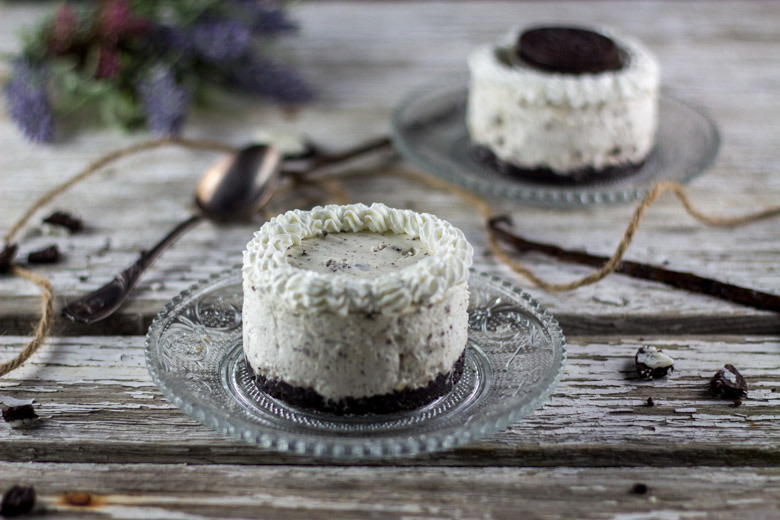
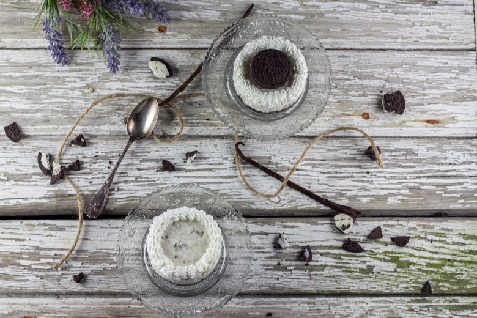

Mini cheesecake Oreo sans cuisson

Aujourd’hui je vous propose une recette de cheesecake Oréo sans cuisson et en version mini!
Avec cette nouvelle recette je participe à la battle food, organisée par Sophie du blog que j’adore les carnets de Sophie et qui a décidé de nous parler « anniversaire » puisque le thème de cette battle food#29 n’est autre que « les gâteaux d’anniversaire».
J’étais folle à l’annonce du thème car c’était le thème que j’avais choisi pour ma bataille food qui au final s’est transformée en « street food »! Finalement j’ai beaucoup ri car combien de chance y avait-il pour que l’on ait toutes les deux la même idée au même moment!?
Les mois de février et de mars sont effectivement synonymes d’anniversaire chez nous car il y a entre autres celui de mon chéri, de ma maman et le mien!!! Pour ce thème il fallait réaliser le gâteau de nos rêves! Pour ne rien vous cacher, j’ai tous les ans droit à un « opéra » le jour de mon anniversaire car c’est un de mes desserts favoris (allez savoir pourquoi car je déteste le café^^….) et mon chéri lui a voulu une tarte aux framboises! Comme nous sommes nés à deux semaines d’intervalle nous avons décidé de nous faire un gâteau qui nous plairait à tous les deux et tadaaaam nous avons opté pour un cheesecake aux Oréo (je n’ai pas soufflé la bougie car mon anniversaire n’est pas encore passé et il paraît que ça porte malheur). Vu qu’il s’agissait d’un dessert pour deux j’ai réalisé des minis cheesecakes plutôt qu’un gros gâteau!
Ces cheesecakes sont sans cuisson et donc très faciles à faire et je peux vous dire que le résultat a été au rendez vous! J’ai fait une base aux Oreo et j’ai mis des Oreo à l’intérieur et j’avais un peu peur que ça fasse « trop » mais finalement ce n’est ni trop sucré ni trop « Oréoté » bref c’est vraiment parfait 😉 !!! Comme je vous en avais déjà parlé dans ma recette des cupcakes Oreo: saviez-vous que les Oreo sont d’après une étude sérieuse aussi addictifs que la cocaïne?? Alors finalement contentez-vous comme nous de minis cheesecakes car il ne faudrait pas en abuser!
Avec cette recette vous pouvez réaliser quatre petits cheesecakes de 7 cm de diamètre et je pense (pas encore tester) que pouvez réaliser un cheesecake de 18cm! Je vous laisse découvrir la préparation de mon cheesecake Oreo d’anniversaire et j’espère qu’elle vous plaira comme elle nous a plu!
Ingrédients
- Oreo - 15
- Beurre fondu - 60g
- Crème liquide à 30% - 250ml
- Cream cheese (philadelphia, St Moret etc..) - 230g
- Sucre en poudre - 50g
- Oreo - 8
- Gousse de vanille - 1
- Crème liquide à 30% - 150 ml
- Sucre - 4 càs
- Gousse de vanille - 1 ou une càc d'extrait de vanille
Instructions
- Dans le bol de votre mixeur, mixer 15 Oreo (ou dans un bol écraser les Oreo)
- Ajouter le beurre et mélanger
- Si vous en avez, placer une bande rhodoïd autour du moule ça facilitera le démoulage
- Tasser ce mélange au fond de vos emporte-pièces Il faut bien le tasser alors vous pouvez y aller avec les mains ou à l'aide du fond d'un verre de la même taille
- Placer au frais pendant la préparation de la crème
- Monter la crème liquide, en chantilly Pour ne pas rater votre chantilly, pensez à placer les batteurs et la crème liquide au congélateur 20 minutes auparavant. Vous pouvez aussi placer le bol dans lequel vous allez faire votre chantilly au frigidaire
- Dans un autre récipient, mélanger le cream cheese avec la gousse de vanille Ouvrez la gousse dans le sens de la longueur et récupérez la poudre noire à l’intérieur
- Ajouter le cream cheese à la crème chantilly et mélanger "délicatement" à l'aide d'une spatule
- Écraser grossièrement les Oreo et ajoutez-les au mélange précédent. Mélanger délicatement à nouveau
- Verser le mélange dans les emporte-pièces
- Placer au frais pendant minimum 6 heures
- Le lendemain, ATTENTION au démoulage!! Petite astuce qui marche à chaque fois pour moi: placez sous l'emporte-pièce un verre d'environ le même diamètre et pousser doucement pour faire sortir le cheesecake par le haut de l'emporte-pièce..
- Monter la crème en chantilly et décorer à l'aide d'une poche à douille Là encore pour ne pas rater votre chantilly, penser à placer les batteurs et la crème liquide au congélateur 20 minutes avant. Vous pouvez aussi placer le bol dans lequel vous allez faire votre chantilly au frigidaire.


Les tips de la communauté
Cheesecake unanimement apprécié, particulièrement pour sa nature sans cuisson et sa texture crémeuse. Nombreux compliments sur les photos festives avec bougies d'anniversaire. L'auteure clarifie que le cream cheese peut être remplacé par du Philadelphia ou St Moret. Quelques testeurs rencontrent des problèmes de démoulage mais la majorité approuve.
Astuces
- Le cream cheese (Philadelphia, St Moret) se trouve facilement en supermarché
- Les petites portions sans cuisson sont plus pratiques et aussi plus fondantes
- Peut se faire la veille et se conserver au froid sans problème
- Bande rhodoïd autour du moule aide au démoulage
- Laisser suffisamment refroidir au congélateur pour la stabilité
Variantes suggérées
- Remplacer cream cheese par petits suisses avec réduction légère du sucre
- Remplacer Philadelphia par mascarpone (variation réussie testée)
Ajustements signalés
- La crème doit être suffisamment montée/ferme pour tenir lors du démoulage